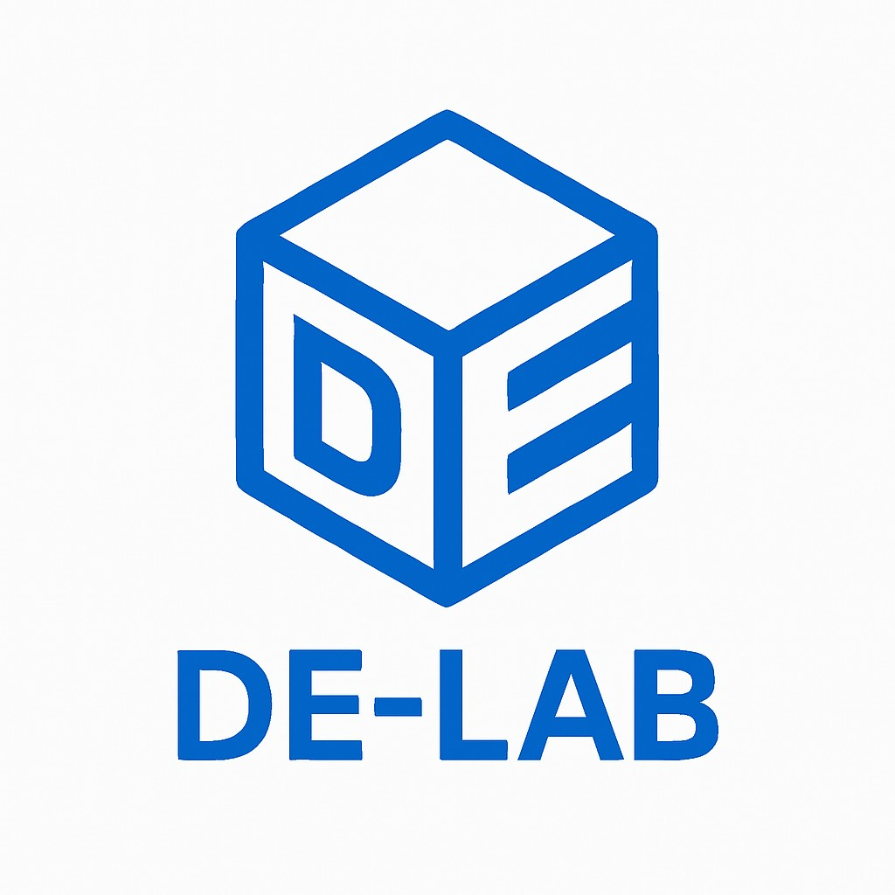
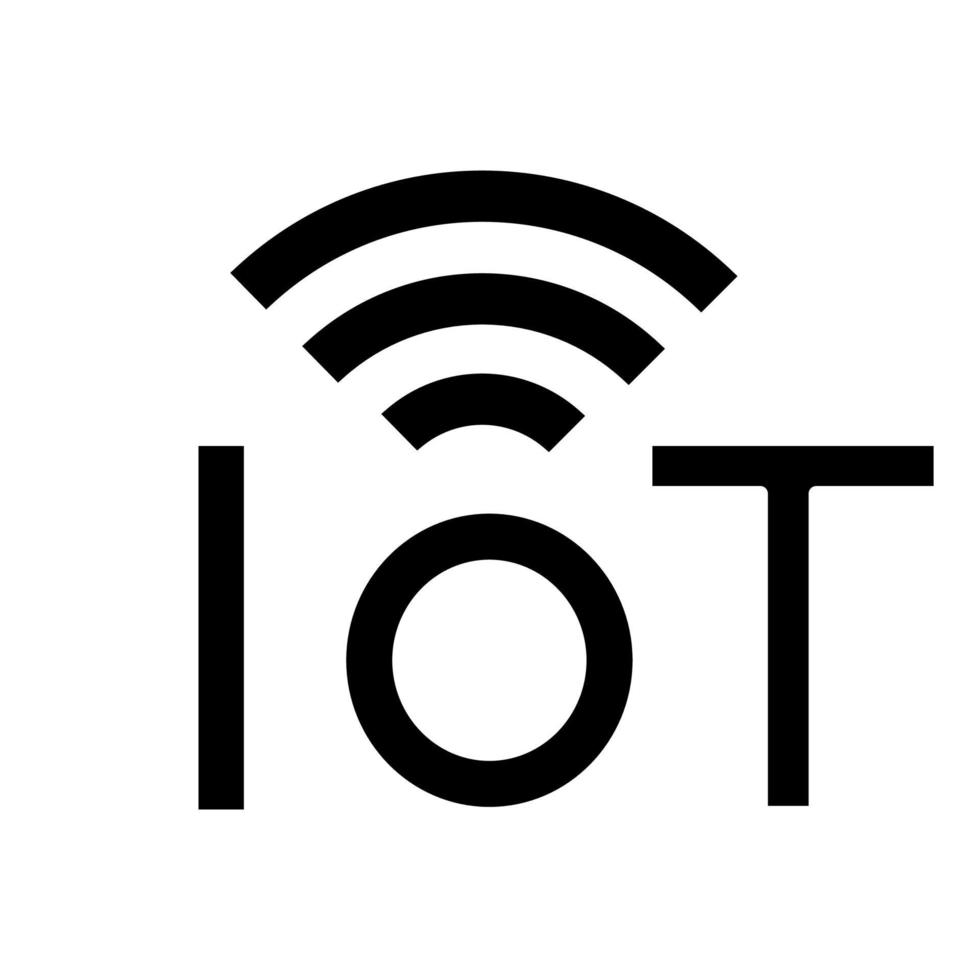
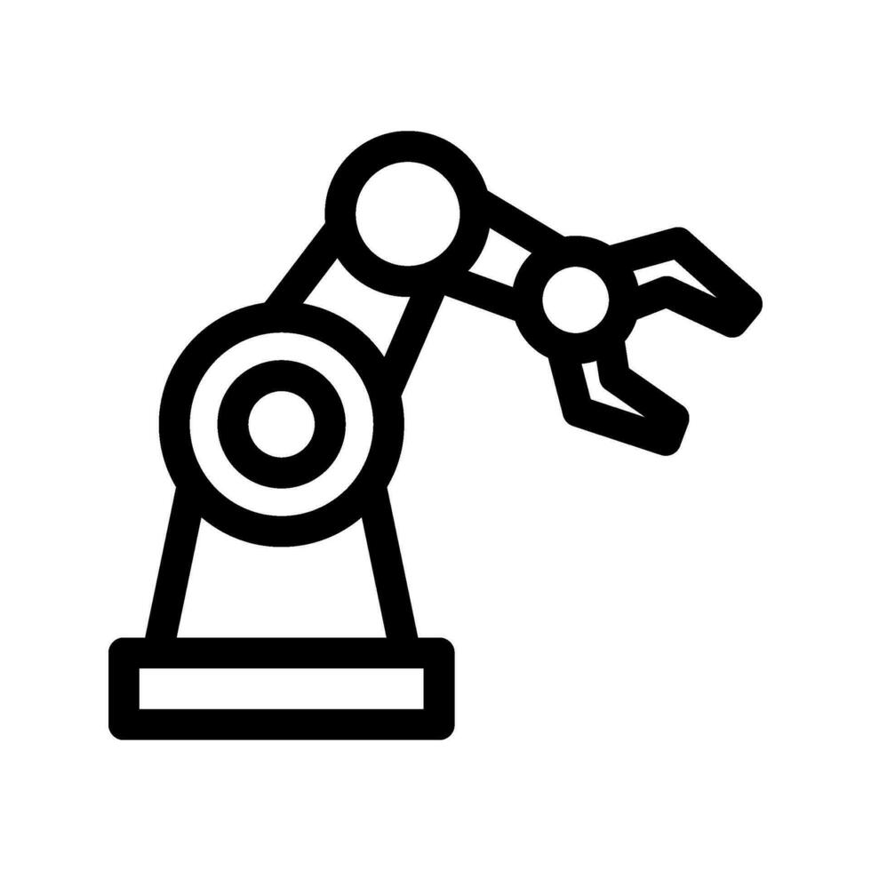

About DE-Lab
Founded in 2024 by a team of three engineering students, DE-Lab is a technology-driven startup focused on delivering cutting-edge solutions in IoT, Artificial Intelligence, and Robotics. With a strong foundation in engineering and a shared vision for smarter and more connected systems, DE-Lab aims to empower industries and individuals through intelligent, efficient, and scalable tech solutions.
{kind=link}
From intelligent automation systems to smart sensor networks and AI-powered applications, we design and build custom solutions that bridge the gap between ideas and impactful technology. At DE-Lab, we believe in turning complex challenges into simple, innovative products that make life easier, businesses smarter, and the future more accessible.
Vision
To become a leading innovator in embedded technology, transforming the way people interact with the world through smart, sustainable, and intelligent solutions.
Project Focus
Currently we are focus only 4 scope categories such as:
IoT solution
AI and Machine learning solution
Robotics solution
Learning Kit for education
|  | 
|
|  |
{kind=link}
{kind=link}
{kind=link}